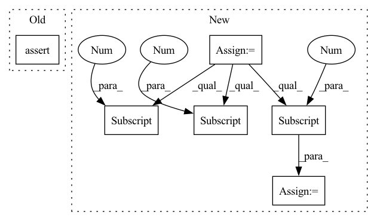

Pattern ID :976
Before Change
bash_script_location = examples_dir / EXAMPLES_RUN_SCRIPT
local_example.run_example(bash_file=str(bash_script_location), force=True)
assert local_example.path.joinpath(
".zen/local_store/tf_trainer/output/3/saved_model.pb"
).is_file()
assert local_example.path.joinpath(After Change
local_example.run_example(bash_file=str(bash_script_location), force=True)
// Verify the example run was successful
repo = Repository(path=str(local_example.path))
pipeline = repo.get_pipelines()[0]
assert pipeline.name == "mnist_pipeline"
first_run = pipeline.runs[-3]
second_run = pipeline.runs[-2]
third_run = pipeline.runs[-1]
assert first_run.status == ExecutionStatus.COMPLETED
assert second_run.status == ExecutionStatus.COMPLETED
assert third_run.status == ExecutionStatus.COMPLETEDIn pattern: SUPERPATTERN
Frequency: 3
Non-data size: 6
Instances Fragment ID: 4681415
Project Name: maiot-io/zenml
Commit Name: 3ed9df5948eb233757b1a51b0f3a9200167747f4
Time: 2021-12-27
Author: thealexejpenner@gmail.com
File Name: tests/integration/test_examples.py
M Class Name: AnonimousClass
N Class Name: AnonimousClass
M Method Name: test_run_not_so_quickstart(1)
N Method Name: test_run_not_so_quickstart(1)
M Parent Class:
N Parent Class:
M File Name: tests/integration/test_examples.py
N File Name: tests/integration/test_examples.py
M Start Line: 57
M End Line: 62
N Start Line: 78
N End Line: 88
Before Change
// only support fused BNs
assert bn_op.type == "FusedBatchNormV3"
// epsilon can be derived as attribute value
numpy_epsilon = bn_op.get_attr("epsilon")
After Change
if bn_op.type in ["Mul"]:
assert len(bn_op.inputs) >= 2, _BN_STRUCTURE_ERROR_MSG
mul = bn_op.inputs[1].op
assert len(mul.inputs) >= 1, _BN_STRUCTURE_ERROR_MSG
rsqrt = mul.inputs[0] .op
assert len(rsqrt.inputs) >= 1, _BN_STRUCTURE_ERROR_MSG
add = rsqrt.inputs[0].op
assert len(add.inputs) >= 2, _BN_STRUCTURE_ERROR_MSG
epsilon = add.inputs[1] .op
numpy_epsilon = epsilon.get_attr("value").float_val[0]
elif bn_op.type in ["FusedBatchNormV3"]:
// epsilon can be derived as attribute value
numpy_epsilon = bn_op.get_attr("epsilon")
else: Fragment ID: 4681431
Project Name: quic/aimet
Commit Name: c30451c5874fc3b241c89f5c4feb152ba84bd9b7
Time: 2020-05-21
Author: quic_klhsieh@quicinc.com
File Name: TrainingExtensions/tensorflow/src/python/aimet_tensorflow/utils/op/fusedbatchnorm.py
M Class Name: BNUtils
N Class Name: BNUtils
M Method Name: get_epsilon(1)
N Method Name: get_epsilon(1)
M Parent Class:
N Parent Class:
M File Name: TrainingExtensions/tensorflow/src/python/aimet_tensorflow/utils/op/fusedbatchnorm.py
N File Name: TrainingExtensions/tensorflow/src/python/aimet_tensorflow/utils/op/fusedbatchnorm.py
M Start Line: 575
M End Line: 577
N Start Line: 574
N End Line: 591
Before Change
assert local_example.path.joinpath(
".zen/local_store/tf_trainer/output/3/saved_model.pb"
).is_file()
assert local_example.path.joinpath(
".zen/local_store/tf_trainer/output/7/saved_model.pb"
).is_file()
After Change
local_example.run_example(bash_file=str(bash_script_location), force=True)
// Verify the example run was successful
repo = Repository(path=str(local_example.path))
pipeline = repo.get_pipelines()[0]
assert pipeline.name == "mnist_pipeline"
first_run = pipeline.runs[-2]
second_run = pipeline.runs[-1]
// Both runs should be completed
assert first_run.status == ExecutionStatus.COMPLETED
assert second_run.status == ExecutionStatus.COMPLETED Fragment ID: 4681410
Project Name: maiot-io/zenml
Commit Name: 3ed9df5948eb233757b1a51b0f3a9200167747f4
Time: 2021-12-27
Author: thealexejpenner@gmail.com
File Name: tests/integration/test_examples.py
M Class Name: AnonimousClass
N Class Name: AnonimousClass
M Method Name: test_run_caching(1)
N Method Name: test_run_caching(1)
M Parent Class:
N Parent Class:
M File Name: tests/integration/test_examples.py
N File Name: tests/integration/test_examples.py
M Start Line: 75
M End Line: 80
N Start Line: 104
N End Line: 123